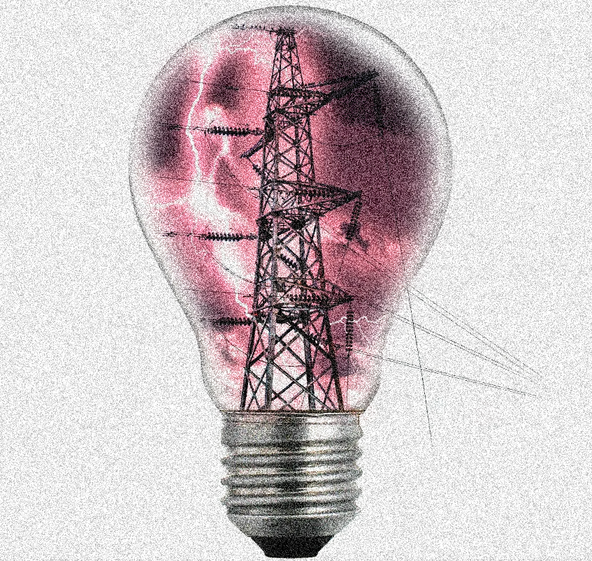
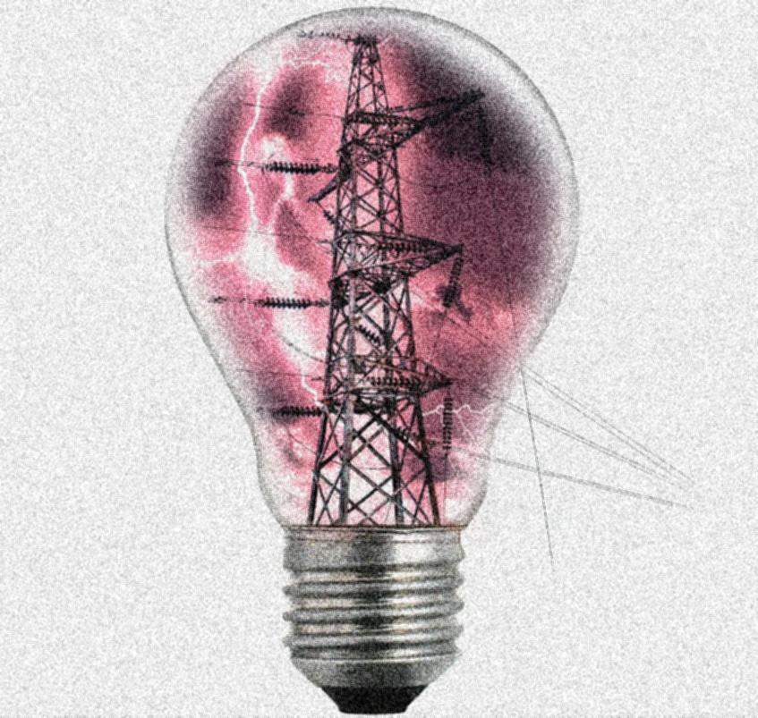
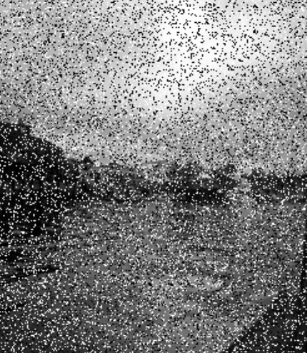
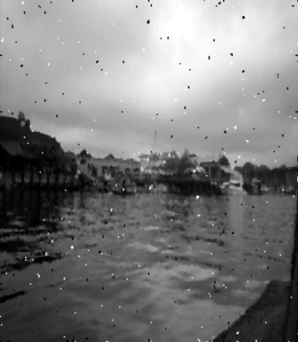
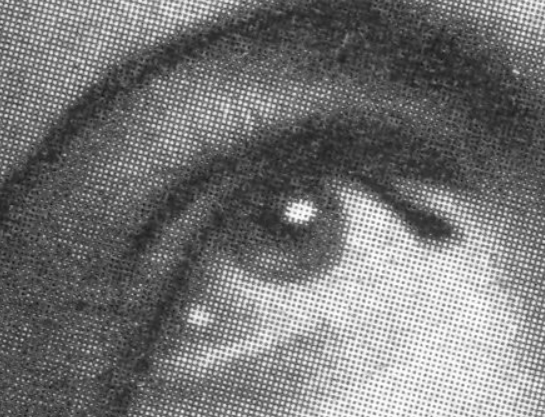
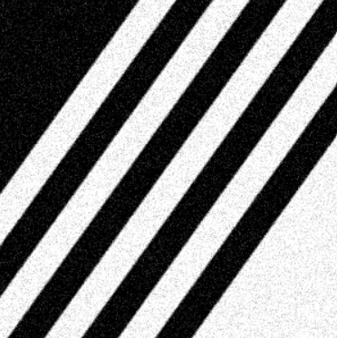

Здесь Вы сможете избавить изображение от шума, с использлванием любого алгоритма на Ваше усмотрение!
Выберете один из следующих алгоритмов:
Фильтр среднего
Медианный фильтр
Размытие по Гауссу
Нелокальный NLM
ApproxiP2EPEN.
Немного информации об алгоритмах
1. Фильтрация по среднему значению
Средний фильтр работает, перемещаясь по изображению от пикселя к пикселю и заменяя каждое значение средним значением соседних пикселей, включая себя.


2. Медианный фильтр
Медианный фильтр — это нелинейный цифровой фильтр, который используется для удаления импульсного шума из изображений. Он заменяет значение пикселя в изображении медианой значений пикселей в его окрестности, что позволяет эффективно устранять шум, сохраняя края и детали изображения.
Алгоритм работы медианного фильтра:
1. Выбирается размер окна фильтрации, обычно квадратное окно (например, 3×3, 5×5).
2. Окно перемещается по изображению, и на каждом шаге значения пикселей внутри окна сортируются.
3. Среднее значение (медиана) этих отсортированных значений заменяет центральный пиксель окна.
4. Этот процесс повторяется для каждого пикселя изображения, что приводит к уменьшению шума при сохранении важной информации.
Так, для окрестности 3×3 элементов медианой будет пятое значение по величине, для окрестности 5×5 — тринадцатое значение и так далее.


3. Размытие по Гауссу
Размытие по Гауссу — это алгоритм для избавления изображения от шума. Он заключается в том, что новое значение каждого пикселя устанавливается равным средневзвешенному значению окрестности этого пикселя. Значение исходного пикселя получает наибольший вес, а соседние пиксели получают меньшие веса по мере увеличения их расстояния до исходного пикселя.
Этот метод приводит к уменьшению высокочастотных шумов, которые являются мелкими деталями и краями, и позволяет получить более плавное изображение. Стандартное отклонение (сигма) функции Гаусса управляет уровнем сглаживания:
Маленькая сигма — меньшее сглаживание, которое сохраняет больше черт и деталей объектов и поверхностей.
Большая сигма — больше сглаживания, которое способно даже размыть важные черты.
Размытие по Гауссу также используется в качестве этапа предварительной обработки в алгоритмах компьютерного зрения для улучшения структуры изображения в различных масштабах.

4. Нелокальный алгоритм сглаживания (NLM)
Основная идея состоит в том, чтобы использовать всю информацию на изображении, а не только пиксели, соседние с обрабатываемым.
Принцип работы: нелокальный сглаживающий фильтр находит похожие области изображения и применяет информацию из них для взаимного усреднения.
В отличие от фильтров локального среднего, которые принимают среднее значение группы пикселей, окружающих целевой пиксель, при фильтрации нелокальных средних используется среднее значение всех пикселей изображения, взвешенное по тому, насколько эти пиксели похожи на целевой пиксель. Это приводит к большей чёткости после фильтрации и меньшей потере детализации изображения по сравнению с алгоритмами локального среднего.

5. Авторский алгоритм ApproxiP2EPEN
Основная идея алгоритма состоит в том, что для каждого пикселя изображения строится окно 5х5. По локальным характеристикам окна (дисперсия, магнитуда градиента, модуль лапласиана) определяются аппроксимирующие функции (полином 2-й степени, положительная и отрицательная экспоненты), строящиеся по значениям интенсивностей пикселей. В итоге интенсивность пикселя заменяется на значение той функции в точке (0, 0), при котором модуль лапласиана изменённого окна окажется наименьшим.
Алгоритм выполняется, если значение модуля лапласиана выше порогового. При высоком пороге алгоритм подходит для устранения импульсного шума. При низком/нулевом пороге - для устранения других типов шума.